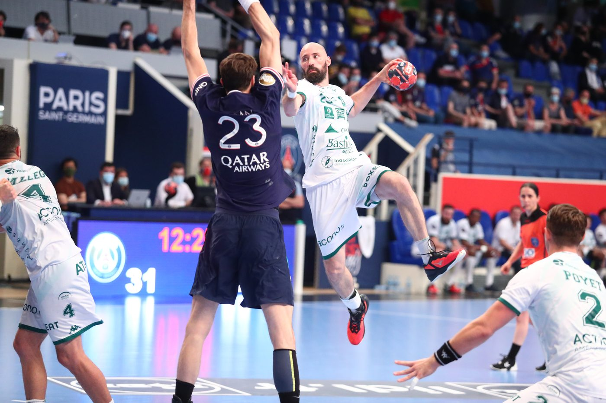

CalCup XX raffle
Raffle
A game-worn jersey donated by EHF Hall of Famer Vid Kavtičnik. Drawn live at the Sunday finals.
CalCup XX raffle
A game-worn jersey donated by EHF Hall of Famer Vid Kavtičnik. Drawn live at the Sunday finals.

SloveniaRight wing / right backEHF Hall of Fame, 2023
Vid Kavtičnik is one of the most decorated wings of his generation. Born in Slovenj Gradec in 1984, he came through the youth ranks of RK Gorenje Velenje and made his debut for Slovenia in 2004. That winter, Slovenia reached the final of the European Championship on home soil and he was named the tournament's best right wing.
He joined THW Kiel in 2005 and won the EHF Champions League in 2007, along with four consecutive Bundesliga titles and three German Cups. In 2009 he moved to Montpellier, where he spent ten seasons, won three French championships, four French Cups and five League Cups, and lifted a second Champions League trophy in 2018, eleven years after the first.
With Slovenia he played 197 matches and scored 543 goals over seventeen years, competed at the 2004 and 2016 Olympic Games, and captained the team to a bronze medal at the 2017 World Championship in France. After a season with Pays d'Aix, he finished his career at USAM Nîmes Gard in 2020/21 and retired in June 2021. The European Handball Federation inducted him into its Hall of Fame in 2023.
The jersey in this raffle is the white away jersey he wore in competition for Nîmes during that final season. Vid donated it to support CalCup and youth handball in the Bay Area.